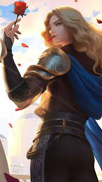

| Character | Info | Abilities |
|---|---|---|
 |
ChouChou is a powerful tank and fighter hero, known for his crowd control abilities. He excels in disrupting enemy formations and knocking them out of position. |
1. The Way of Dragon Chou kicks an enemy hero, knocking them back and stunning them for a short duration. 2. Shunpo Chou dashes to a target location, dealing damage and gaining a shield. 3. Jeet Kune Do Chou performs a series of fast kicks, damaging and stunning nearby enemies. Ultimate: The Power of Dragon Chou uses his martial arts skills to deal massive area damage and knock back enemies in his range. |
 |
AlucardAlucard is a powerful fighter hero with strong sustain and damage output. Known for his high mobility and ability to dive deep into enemy lines, he excels at eliminating enemies one by one. |
1. Mortal Coil Alucard dashes towards a target, dealing damage and stunning the first enemy he hits. 2. Pursuit Alucard instantly teleports to a marked target, dealing damage and healing himself based on the damage dealt. 3. Power of the Blood Alucard increases his lifesteal and attack damage for a short duration. Ultimate: Fission Wave Alucard releases a powerful wave of energy, dealing massive damage to all enemies in his path and healing based on the damage dealt. |
AkaiAkai is a tank hero with great crowd control and disruption abilities. His ultimate allows him to knock enemies into walls, providing great team fight control. |
1. The Way of the Bear Akai dashes to a target location, knocking back enemies and dealing damage. 2. Body Slam Akai rolls into a ball, charging towards enemies, dealing damage, and slowing them down. 3. Kung Fu Master Akai gains a shield that absorbs damage for a short duration and deals damage to nearby enemies. Ultimate: Hurricane Dance Akai spins around, knocking back enemies and dealing damage while pushing them into walls to stun them. |
|
|  |
LancelotLancelot is a highly mobile assassin with high burst damage. He excels at quickly taking down squishy targets and escaping danger using his agile abilities. |
1. Puncture Lancelot dashes forward, dealing damage and slowing enemies in his path. 2. Phantom Execution Lancelot lunges forward, dealing damage to all enemies in his path and increasing his attack speed temporarily. 3. Sword Spike Lancelot uses his sword to deal a series of quick strikes, damaging enemies in an area. Ultimate: Phantom Steed Lancelot summons a phantom steed that allows him to dash around the battlefield while gaining increased attack speed and damage. |
 |
FannyFanny is a highly mobile assassin, known for her high skill ceiling and incredible speed. Her abilities allow her to zip across the map and eliminate enemies with her deadly blades. |
1. Steel Cable Fanny swings from her cables to a target location, dealing damage to enemies in her path. 2. Cut Throat Fanny charges at a target, dealing high burst damage and stunning the target. 3. Energy Transformation Fanny converts her energy into additional damage, increasing her attack power and mobility. Ultimate: Tornado Strike Fanny unleashes a series of rapid strikes, dealing damage to all enemies in her vicinity and slowing them down. |